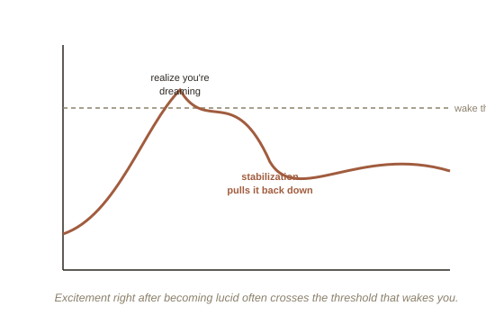

Chapter 4: Once You're In — Stability, Control, and False Awakenings
Becoming lucid is often described, by people experiencing it for the first time, as intensely exciting — which turns out to be exactly the problem. Chapters 2 and 3 covered how to trigger the moment of recognition, whether that arrives as a sudden realization inside an ordinary dream, or — for a WILD entry specifically — as something closer to a direct handoff, with no separate "moment of noticing" at all, since awareness was never lost in the first place. Either way, this chapter covers what happens immediately after, which has its own, separate set of failure points.
The dream usually collapses right when you succeed
The most common first experience of lucidity isn't flying or shapeshifting — it's waking up almost immediately, within seconds of realizing "I'm dreaming." The surge of excitement and sudden cognitive alertness that comes with the realization is itself often enough to pull the brain the rest of the way into full waking. Experienced lucid dreamers treat this as the first real skill to build, before control or exploration: dream stabilization.
The most commonly taught stabilization technique is physical: rubbing your hands together, or deliberately looking down at your dream-hands and studying the detail. The proposed reason this works is that it gives the dreaming brain a concrete sensory task to keep generating, which seems to anchor the dream's stability the same way focusing on a physical object can settle racing attention while awake. Spinning in place, or verbally narrating what you're doing out loud inside the dream ("I'm stable, this is a dream, I'm staying here") are common alternatives, and most practitioners find one method that reliably works for them personally through trial and error rather than any single universal fix.

Control is a separate, gradually built skill
A persistent misconception, partly fueled by movies, is that lucidity itself grants full control — that the instant you know you're dreaming, you can fly, reshape the environment, or summon anything at will. In practice, control is graded and has to be built the way any skill is, and it's tightly linked to genuine expectation: dreamers who deeply, confidently expect an action to work tend to succeed at it far more reliably than dreamers who are hoping it might. This mirrors, in a strange dream-logic way, the placebo research covered elsewhere in this library — expectation itself shaping outcome, just inside a very different setting. Early, low-confidence attempts at dramatic control (flying, teleporting) fail more often than smaller, more confidently expected changes (opening a door to find a different room than expected, changing the lighting).
False awakenings: a dream about waking up
One of the stranger, well-documented phenomena in this territory is the false awakening: a dream in which you dream that you've woken up — get out of bed, start your morning routine, sometimes in convincing, mundane detail — only to actually wake up later and realize none of it happened. False awakenings can nest (a dream of waking up, inside a dream of waking up), and are disorienting precisely because they don't feel qualitatively different from real waking, at least not until something in the dream logic breaks. Some lucid dreaming practitioners deliberately use a reality check (Chapter 2's technique) immediately upon any waking, specifically to catch false awakenings before acting on them as if they were real.
Try this
Ideas for noticing or testing this in your own life.
- Decide your stabilization method in advance, before you're lucid: pick one (hand-rubbing is the most tested starting point) and mentally rehearse it now, so it's an automatic reflex rather than something you have to invent in the moment.
- Try a reality check immediately upon any real waking for a week — it costs nothing, and it's the direct, practical defense against being fooled by a false awakening if one happens.
Worth pulling on?
A few loose threads from this chapter — if any of these genuinely grab you, that's a good sign of where to go next.
- Some sleep labs have gone further than one-way signaling and established rudimentary two-way communication — a lucid, sleeping dreamer answering simple prearranged questions in real time via eye or breathing signals, effectively interviewed mid-dream.
- Lucid dreaming has been explored, with real but still mixed evidence, as a treatment for recurring nightmares — training people to become lucid inside a nightmare and consciously alter its outcome, rather than simply enduring it. → Chapter 5 covers where this practice has genuine, tested uses beyond novelty, and closes out the arc.